Gallery
Images
 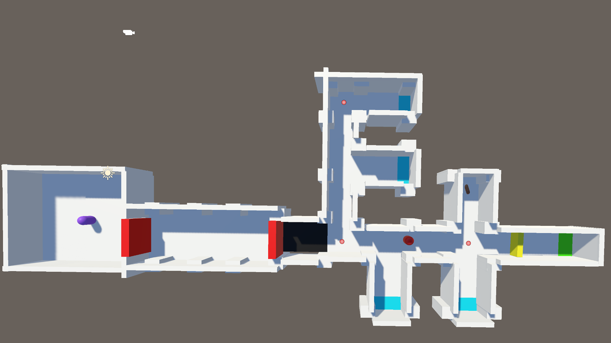
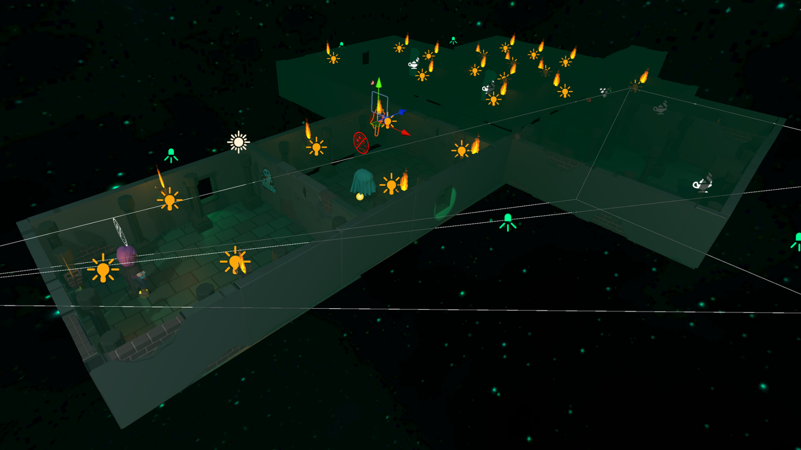
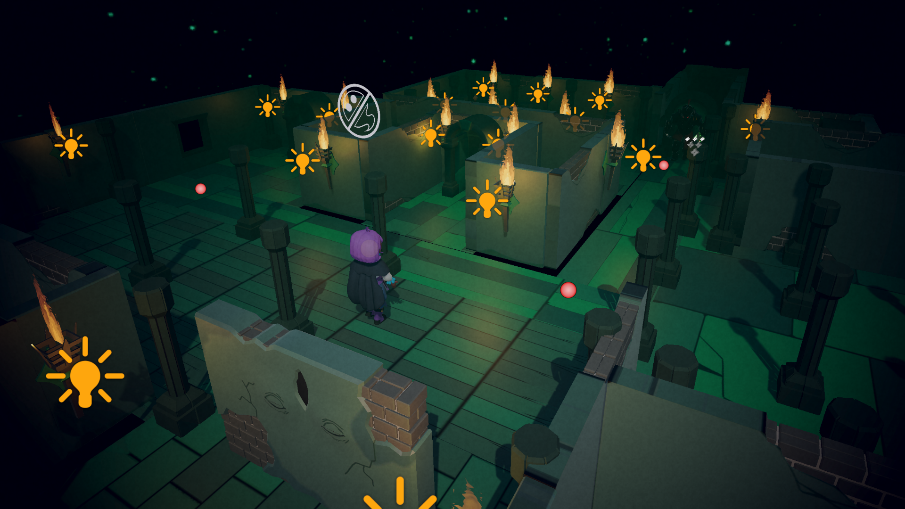
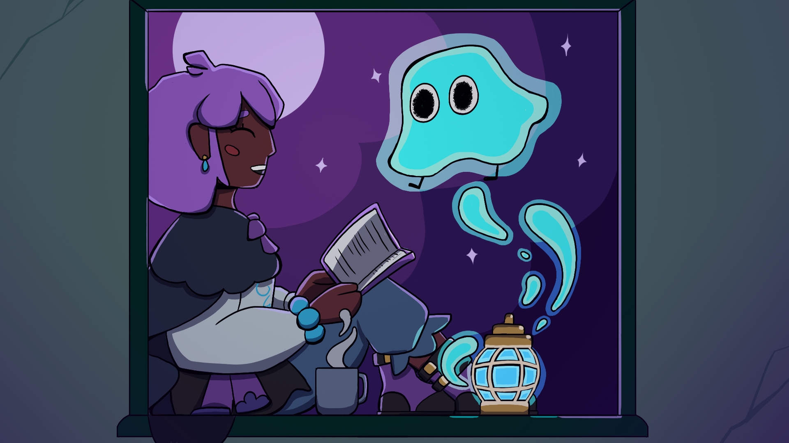
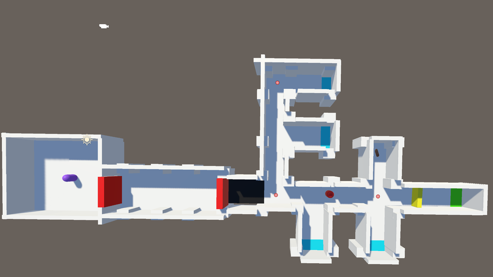
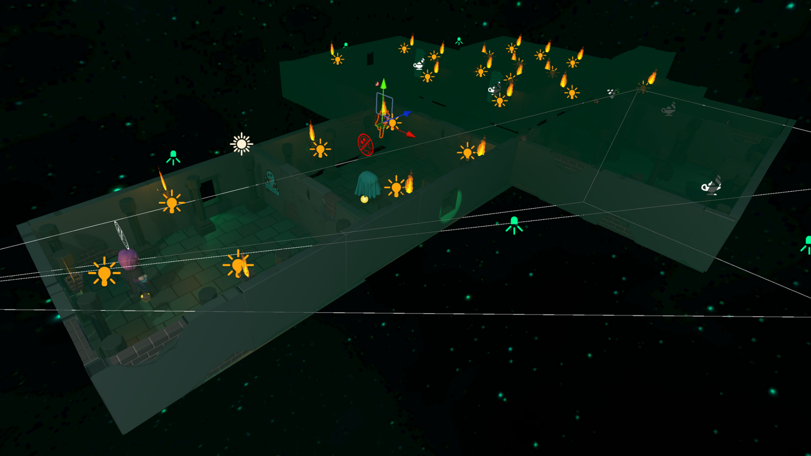
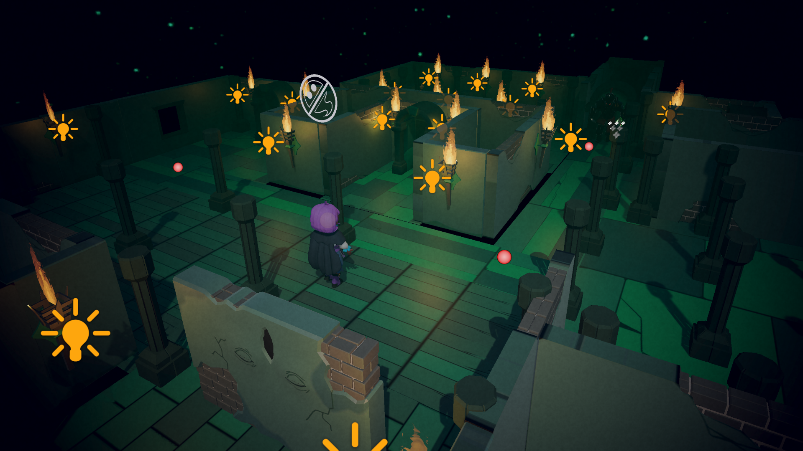
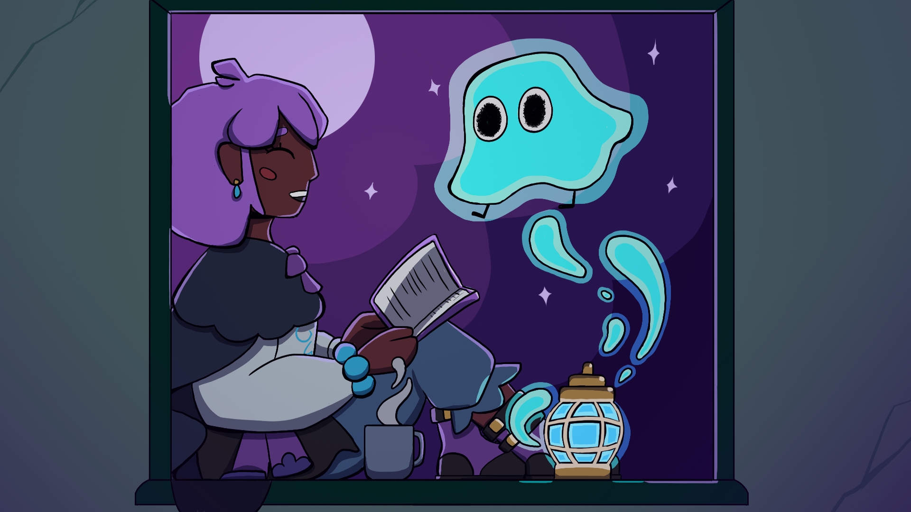
Gifs
 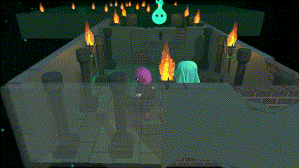
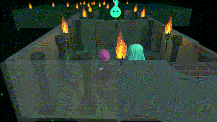

 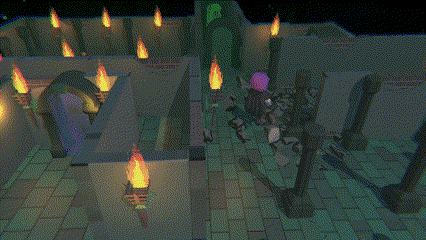
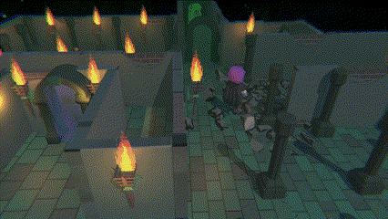

The game was heavily inspired by The Legend of Zelda, Link's Awakening for the switch and the DS game legend of Zelda Spirit Tracks. The games Jam's theme this time was a "helping hand".
The main objective for the player is to navigate the dungeon and get the human to reach the goal. Using the ability to use your ghost, the player will now take control of the ghost, the ghost has the ability to posses both the human and enemies in the scene. Each enemy has their own unique ability, that the player gets to use whilst possessed.
This fits the theme perfectly, as the human needs the ghost to help them reach the end. The ghost needs to use the enemies to interact with elements within the dungeon to help the human too.
The player however, must tactically avoid enemies and when out of sight the player can summon their ghost and posses them. If spotted by the enemy the ghost will be too afraid to appear.
This games jam took place during the final week of my games engine bootcamp, during this time we were learning a variety of topics and skills in the Unity engine. I wanted to showcase my understanding of the engine and a multitude of what I learned. This meant I undertook tasks which are usually out of my field. More polish and refinement was needed after the initial upload, which lead me to do additional tasks.
The story is the player is trapped with their ghost inside a dungeon, only together and using their enemies abilties can they escape.
All enemies have a sight radius if they see the human player, it will stop the player from summoning the ghost.
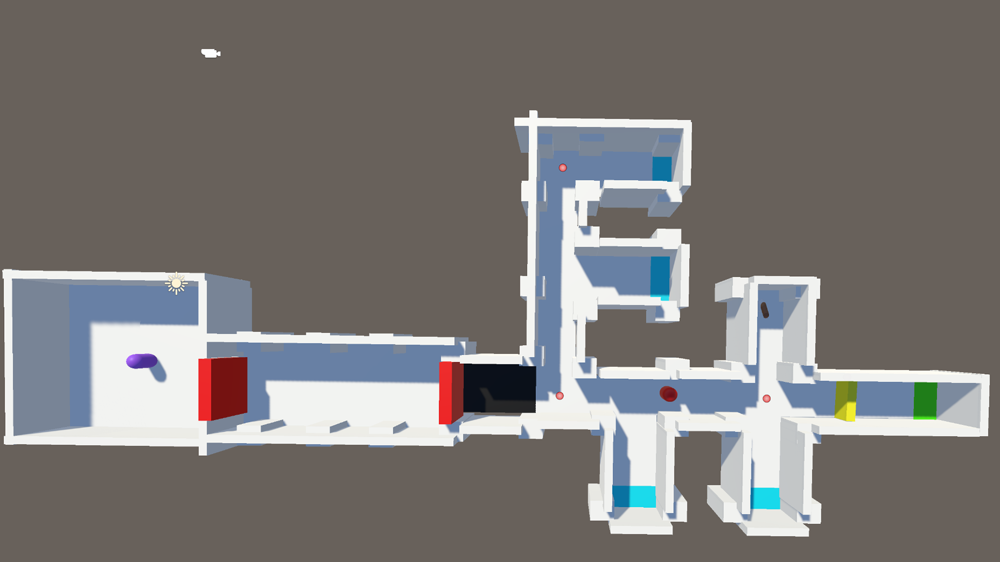
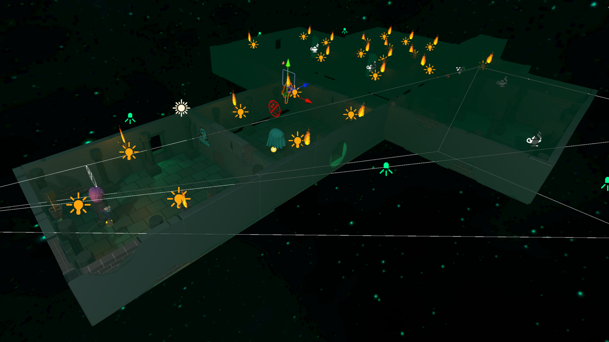
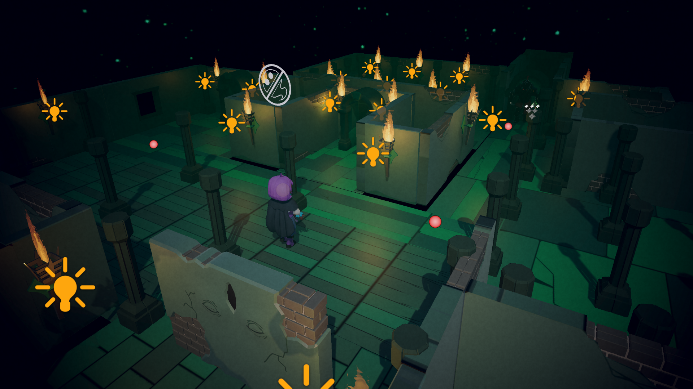
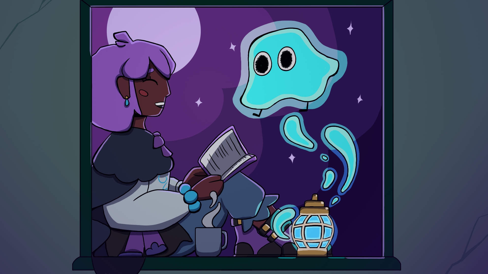
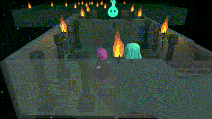
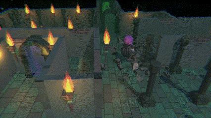
Please check out my team's work:
Art:
Code: